Confidential e Extra
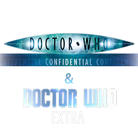Desde a volta de Doctor Who, em 2005, a série contou com uma companion, que possuía um episódio respectivo a cada episódio seu. Era esta o Doctor Who Confidential, cancelado pela BBC em 2011 para cortar gastos, tendo seu último episódio referente ao finale da 6ª Temporada.
A partir da 7ª Temporada clipes de bastidores passaram a ser disponibilizados online, seja pelo site oficial da série, ou pelo youtube. Na 8ª Temporada surge o Doctor Who Extra.
DOCTOR WHO CONFIDENTIAL
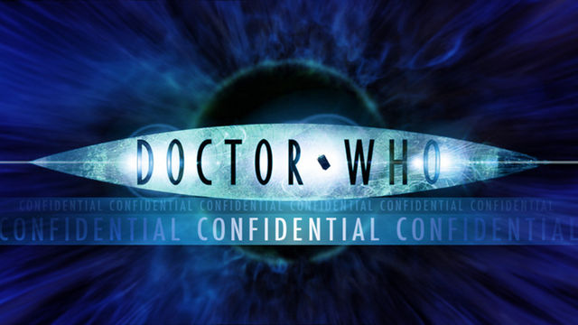 Aqui estão todos os episódios do Doctor Who Confidential sem legenda, a não ser quando notado, podendo se tratar de material em inglês ou até mesmo em português.1ª TEMPORADA
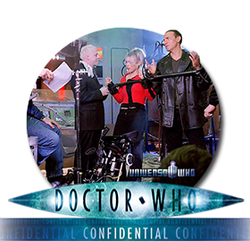xx¹.A New Dimension (Preview)
01.Bringing Back the Doctor (Rose)
02.The Good, the Bad and the Ugly (The End of the World)
03.TARDIS Tales (The Unquiet Dead)
04.I Get a Side-Kick Out of You (Aliens of London)
05.Why on Earth? (World War Three)
06.Dalek (Dalek)
07.The Dark Side (The Long Game)
08.Time Trouble (Father’s Day)
09.Special Effects (The Empty Child)
10.Weird Science (The Doctor Dances)
11.Unsung Heroes and Violent Death (Boom Town)
12.The World of Who (Bad Wolf)
xx².The Ultimate Guide (Episódios 1 à 12 da Temporada)
13.The Last Battle (The Parting of the Ways)
2ª TEMPORADA
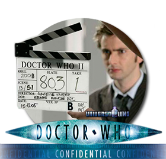xx¹.Backstage at Christmas (The Christmas Invasion)
xx².One Year On (Preview)
01.New New Doctor (New Earth)
02.Fear Factor (Tooth and Claw)
03. Friends Reunited (School Reunion)
04.From Script to Screen (The Girl in the Fireplace)
05.Cybermen (Rise of the Cybermen)
06.From Zero to Hero (The Age of Steel)
07.The Writer’s Tale (The Idiot’s Lantern)
08.You’ve Got the Look(The Impossible Planet)
09.Myths and Legends (The Satan Pit)
10.The New World of Who (Love & Monsters)
11.The Fright Stuff (Fear Her)
12.Welcome to Torchwood (Army of Ghosts)
13.Finale (Doomsday)
3ª TEMPORADA
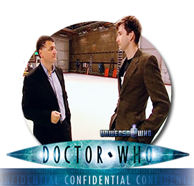xx¹. Music and Monsters (The Runaway Bride)
01. Meet Martha Jones (Smith and Jones)
02.Stage Fright (The Shakespeare Code)
03.Are We There Yet? (Gridlock)
04.A New York Story (Daleks in Manhattan)
05.Making Manhattan (Evolution of the Daleks)
06.Monsters Inc. (The Lazarus Experiment)
07.Space Craft (42)
08.Alter Ego (Human Nature)
09.Bad Blood (The Family of Blood)
10.Do You Remember the First Time? (Blink)
11.‘Ello, ‘Ello, ‘Ello (Utopia)
12.The Saxon Mystery (The Sound of Drums)
13.The Valiant Quest (Last of the Time Lords)
xx².Designs On Doctor Who (3ª Temporada e 1ª Temporada de Torchwood)
4ª TEMPORADA
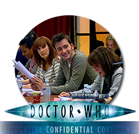xx¹.Time Crash Confidential (Children In Need: Time Crash)
xx².Kylie Special (Voyage of the Damned)
01.A Noble Return (Partners in Crime)
02.The Italian Job (The Fires of Pompeii)
03.Oods and Ends (Planet of the Ood)
04.Send in the Clones (The Sontaran Stratagem)
05.Sontar-Ha! (The Poison Sky)
06.Sins of the Fathers (The Doctor’s Daughter)
07.Nemesis (The Unicorn and the Wasp)
08.Shadow Play (Silence in the Library)
09.River Runs Deep (Forest of the Dead)
10.Look Who’s Talking (Midnight)
11.Here Come the Girls (Turn Left)
12.Friends and Foe (The Stolen Earth)
13.End of an Era (Journey’s End)
Especiais
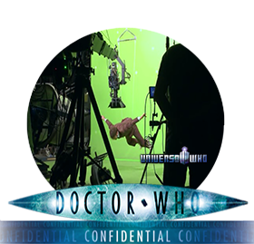01.Christmas 2008 Special (The Next Doctor)
xx¹.Top 5 Christmas Moments (Todos os Especiais de Natal até então)
xx².At The Proms (Doctor Who Proms 2008)
xx³.The Eleventh Doctor (Apresentação de Matt Smith)
02.Desert Storm (Planet of the Dead)
03.Is There Life on Mars? (The Waters of Mars)
04.Lords and Masters (The End of Time, Parte 1)
05.Allons-y! (The End of Time, Parte 2)
5ª TEMPORADA
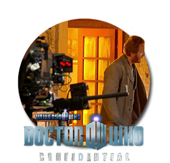01.Call Me the Doctor (The Eleventh Hour)
02.All About the Girl (The Beast Below)
03.War Games (Victory of the Daleks)
04.Eyes Wide Open (The Time of Angels)
05.Blinded By the Light (Flesh and Stone)
06.Death in Venice (The Vampires of Venice)
07.Arthurian Legend (Amy’s Choice)
08.After Effects (The Hungry Earth)
09.What Goes on Tour… (Cold Blood)
10.A Brush with Genius (Vincent and the Doctor)
11.Extra Time (The Lodger)
12.Alien Abduction (The Pandorica Opens)
13.Out of Time (The Big Bang)
xx¹.Backstage at the Proms (Doctor Who at the Proms 2010)
xx².Christmas Special 2010 (A Christmas Carol)
6ª TEMPORADA
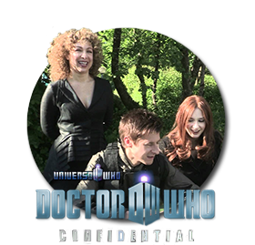xx¹.My Sarah Jane: A Tribute to Elisabeth Sladen
01.Coming to America (The Impossible Astronaut)
02.Breaking the Silence (Day of the Moon)
03.Ship Ahoy! (The Curse of the Black Spot)
04.Bigger on the Inside (The Doctor’s Wife)
05.Double Trouble (The Rebel Flesh)
06.Take Two (The Almost People)
07.The Born Identity (A Good Man Goes to War)
08.River Runs Wild (Let’s Kill Hitler)
09.About a Boy (Night Terrors)
10.What Dreams May Come (The Girl Who Waited)
11.Heartbreak Hotel (The God Complex)
12.Open All Hours (Closing Time)
13.When Time Froze (The Wedding of River Song)
xx².The Nights’ Tale (Space-Time, Night and the Doctor)
Legendas Disponíveis em Inglês e Português
BASTIDORES DA 7ª TEMPORADA
01.Asylum of the Daleks
02.Dinosaurs on a Spaceship
03.A Town Called Mercy
04.The Power of Three
05.The Angels Take Manhattan
xx.The Snowmen
06.The Bells of Saint John
07.The Rings of Akhaten
08.Cold War
09.Hide
10.Journey to the Centre of the TARDIS
11.The Crimson Horror
12.Nightmare in Silver
13.The Name of the Doctor
ESPECIAIS:
xx.Doctor Who at the Proms 2013
Especiais
01.The Night of the Doctor
02.The Day of the Doctor
03.The Time of the Doctor
Boa parte dos clipes online
DOCTOR WHO EXTRA
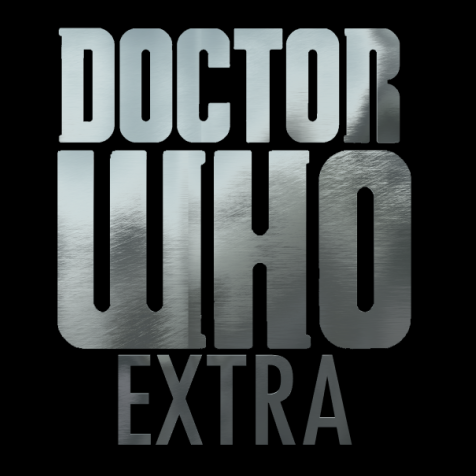 A partir da 8ª Temporada, o formato dos vídeos de bastidores foi alterado para trazer um formato mais episódico, com narração e certa estrutura. Com esta alteração, veio um nome: Doctor Who Extra. Na 9ª Temporada o Extra voltou a ser composto de clipes onlines avulsos, agrupados apenas no lançamento para DVD. Aqui disponibilizamos as duas primeiras temporadas, sendo a segunda como lançada online.1ª TEMPORADA
01.Deep Breath
02.Into the Dalek
03.Robot of Sherwood
04.Listen
05.Time Heist
06.The Caretaker
07.Kill the Moon
08.Mummy on the Orient Express
09.Flatline
10.In the Forest of the Night
11.Dark Water
12.Death in Heaven
xx.Last Christmas
Toda a temporada online
2ª TEMPORADA
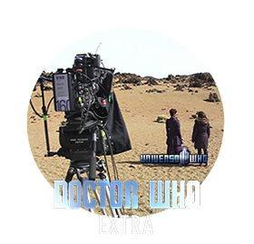01.The Magician’s Apprentice
02.The Witch’s Familiar
03.Under the Lake
04.Before the Flood
05.The Girl Who Died
06.The Woman Who Lived
07.The Zygon Invasion
08.The Zygon Inversion
09.Sleep No More
10.Face the Raven
11.Heaven Sent
12.Hell Bent
xx.The Husbands of River Song
Toda a temporada online